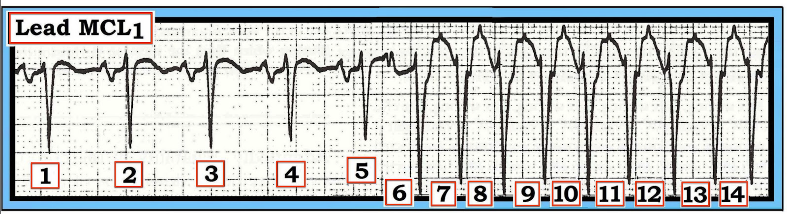
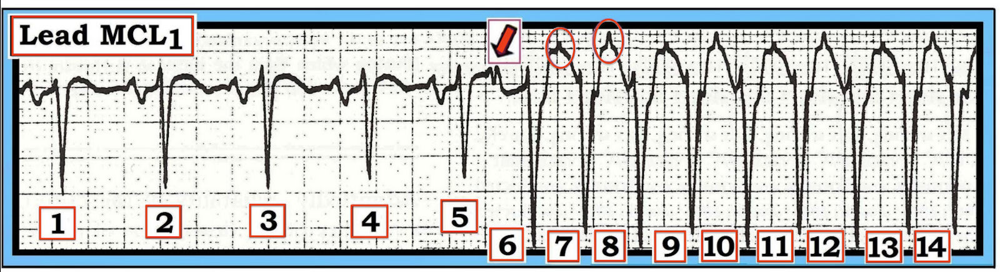
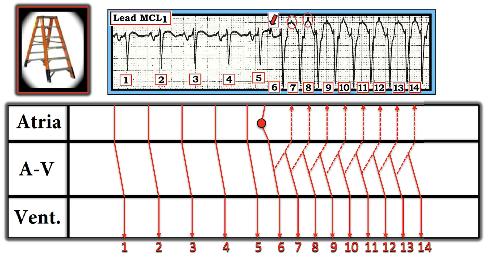
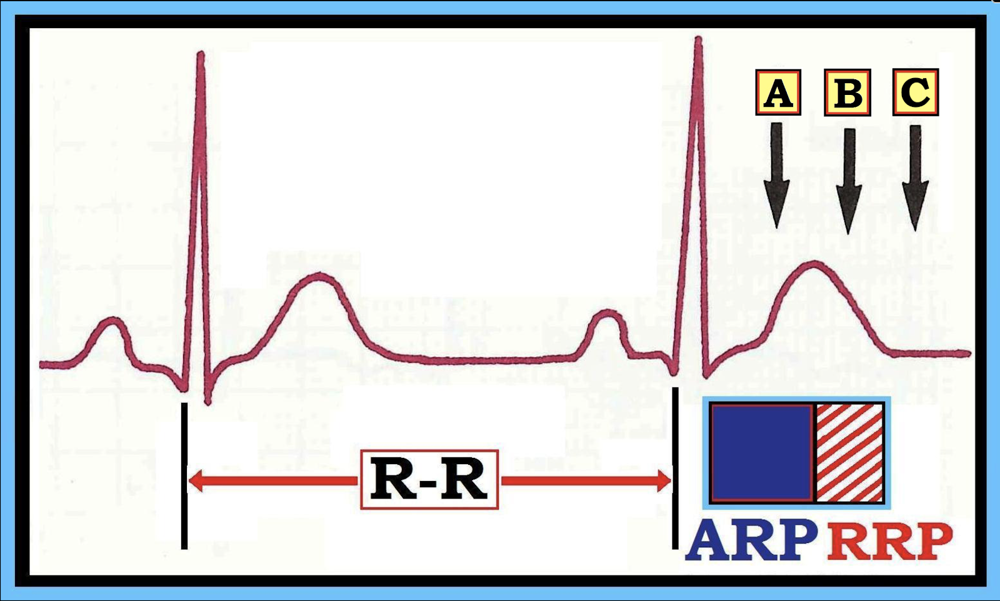
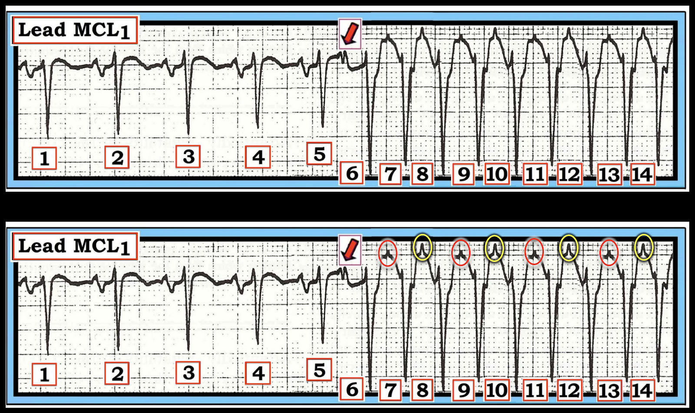
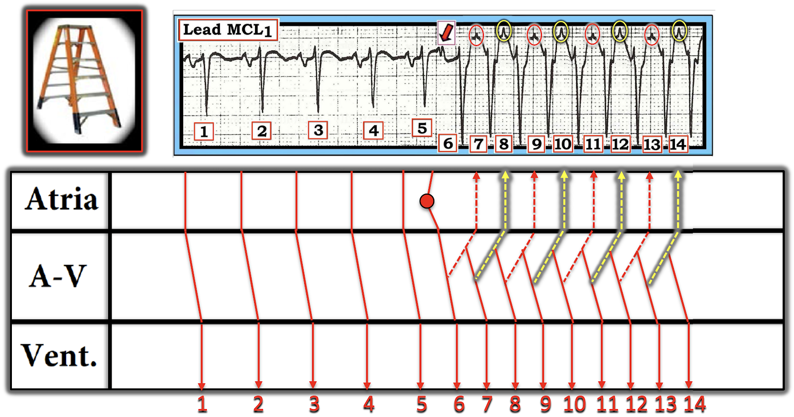

ECG Blog #501 (15) — Đây có phải là một loạt VT?
=========================
LƯU Ý: Tôi đã quyết định cập nhật và đăng lại một số ca yêu thích của tôi từ những năm trước. (Bài hôm nay là phiên bản cải tiến của ECG Blog #15 — đăng lần đầu năm 2011).
=========================
Dải nhịp trong Hình 1 — được ghi từ chuyển đạo theo dõi MCL-1 bên phải.
- Có phải một loạt VT (nhịp nhanh thất) bắt đầu từ nhát #6?
- Bạn chắc chắn đến mức nào về chẩn đoán của mình?


SUY NGHĨ CỦA TÔI về nhịp trong Hình 1:
Nhịp nền (như gợi ý từ 5 nhát đầu) — là nhịp nhanh xoang khoảng ~105/phút (tức là, QRS hẹp và đều, với khoảng R-R của 5 nhát đầu chỉ dưới 3 ô lớn — và có sóng P với khoảng PR cố định trước mỗi QRS ở các nhát #1-5).
- Sau nhát #5 — nhịp xoang bị cắt ngang bởi một loạt nhịp WCT đều (nhịp nhanh QRS rộng).
- Tần số của nhịp WCT đều này là ~200/phút (khoảng R-R cách-một-nhát của loạt WCT là ~3 ô lớn — vậy một nửa tần số = 300÷3 =100 X 2 ~200/phút).
- Chúng ta không biết loạt này kéo dài bao lâu — vì nó vẫn đang tiếp diễn khi dải nhịp kết thúc sau nhát #14.
- Không có sóng P xoang trong lúc WCT, nhưng — Chẳng phải trông như có một dạng hoạt động nhĩ nào đó hiện diện sao?
ĐIỂM THEN CHỐT (PEARL) #1: Việc thấy hoạt động nhĩ trong một loạt nhịp WCT đều không nhất thiết có nghĩa là nhịp đó có nguồn gốc trên thất. Lý do là cả các nhịp SVT vào lại lẫn VT đều có thể dẫn truyền ngược dòng với dẫn truyền thất-nhĩ (VA) 1:1.
- Trong khi sóng P ngược dòng thường âm ở các chuyển đạo dưới — chúng thường dương ở một chuyển đạo bên phải như aVR, V1 hoặc MCL-1. Vì vậy — các biến dạng nhỏ, dương, nhọn mà dường như ta thấy xuất hiện ở giữa khoảng R-R trong lúc WCT (tức là, bắt đầu sau nhát #6) — không cho chúng ta câu trả lời.
ĐIỂM THEN CHỐT #2: Độ rộng của các phức bộ QRS trong cơn nhịp nhanh bắt đầu từ nhát #6 rõ ràng trông rộng hơn so với 5 nhát dẫn truyền từ xoang đầu tiên. Dù vậy — nó không trông "rất" rộng.
- Dù vậy — chúng ta chỉ thấy 1/12 của điện tâm đồ trong Hình 1. Một phần của QRS có thể nằm trên đường đẳng điện. Khi đó — QRS có thể "trông" hẹp ở một số chuyển đạo, trong khi thực tế — QRS có thể rất rộng ở các chuyển đạo khác.
- "12 chuyển đạo tốt hơn một!" (tức là, Khi có thể, nếu bệnh nhân ổn định huyết động — hãy cố gắng ghi điện tâm đồ 12 chuyển đạo trong cơn nhịp nhanh! ).
- Nói như trên, chúng ta có thể nghi ngờ nhịp trong Hình 1 là nhịp trên thất — vì biến dạng khởi đầu của các phức bộ QRS trong loạt WCT dương và hẹp (rất giống với 5 nhát dẫn truyền từ xoang đầu tiên).
- Ngoài ra — sóng S của QRS trong loạt này đi xuống dốc đứng (nhanh). Điều này gợi ý dẫn truyền trên thất — trong khi với VT, biến dạng khởi đầu của QRS có xu hướng rộng hơn (vì xung động không phát sinh từ bên trong hệ thống dẫn truyền thất — và do đó khử cực thất chậm hơn).
- Nói như trên — vẫn có ngoại lệ — và "12 chuyển đạo tốt hơn một" để xác định LIỆU QRS có (hay không) thật sự rộng trong cơn nhịp nhanh.
================================
Điểm MẤU CHỐT: Loạt WCT bắt đầu như thế nào trong Hình 1?
(tức là, Chúng ta thấy gì ngay trước nhát #6?).
================================
TRẢ LỜI:
Hãy chú ý mũi tên ĐỎ mà tôi đã thêm vào Hình 2!
- Mũi tên đỏ này chỉ vào chỗ khía trên sóng T đi trước loạt nhát rộng ( = sóng T của nhát #5). Đây là chỗ khía "tố cáo" của một PAC (ngoại tâm thu nhĩ — Premature Atrial Contraction) — mà trong Hình 2, đã khởi phát một cơn SVT vào lại ( = AVNRT hoặc AVRT).
- Ngược lại — khởi phát của VT không có PAC đi trước.


ĐIỂM THEN CHỐT #3: Xin nhấn mạnh: Nguyên nhân thường gặp nhất của một nhịp WCT đều là nhịp nhanh thất! Dù vậy — có những lúc chúng ta chắc chắn có thể loại trừ VT. Nhịp trong Hình 2 là một trong những lúc như vậy.
- QRS giãn rộng trong cơn nhịp nhanh có thể xảy ra do dẫn truyền lệch hướng liên quan tần số (Xem bên dưới). Cách tốt nhất để chẩn đoán dẫn truyền lệch hướng — là nhận ra một sóng P sớm ở thời điểm khởi phát cơn nhịp nhanh. Mũi tên ĐỎ trong Hình 2 làm đúng điều đó.
- PAC đôi khi khó nhận ra — vì chúng có thể bị ẩn một phần (hoặc hoàn toàn) trong sóng T đi trước. Nhưng không phải trong Hình 2. Cách để chúng ta chắc chắn rằng chỗ khía được đánh dấu bằng mũi tên ĐỎ là "thật" (chứ không phải do nhiễu) — là không sóng T nào trong 4 sóng T trước đó của các nhát dẫn truyền từ xoang có chút dấu hiệu khía nào.
- Và, như đã nêu ở trên — 2 dấu hiệu khác phù hợp (dù không có giá trị chẩn đoán) với nguyên nhân trên thất của các nhát #6-đến-#14 là: i) mức độ giãn rộng QRS trong loạt này dường như rất ít — và, ii) biến dạng khởi đầu (cả sóng r nhỏ, mảnh lẫn sườn xuống dốc đứng của sóng S) có hình dạng tương tự phần đầu của QRS ở các nhát xoang.
Minh họa bằng giản đồ bậc thang:
Cơ chế của một cơn SVT vào lại được thể hiện rõ nhất bằng giản đồ bậc thang (laddergram) (như trong Hình 3):
- Các nhát #1-đến-5 được dẫn truyền từ xoang.
- Nhát #6 là một PAC. Nhát này khởi đầu chuỗi sự kiện — với dẫn truyền ngược dòng trở lại nhĩ (các đường chấm xuất phát từ bên trong Tầng Nút AV).
- Khi "thời điểm vừa vặn" — cơ chế mà qua đó một PAC có thể khởi phát một loạt SVT vào lại — là nếu nhát sớm này đến nút AV và gặp đường nhanh vẫn còn trơ, khiến dẫn truyền xuống thất đi qua đường chậm — nhờ đó một vòng vào lại tự duy trì có thể được thiết lập.


=========================
LƯU Ý: Mời bạn xem PHẦN BỔ SUNG #2 bên dưới về bình luận sâu sắc mà tôi vừa nhận được từ WB Ren.
=========================
Vậy tại sao QRS lại rộng trong Hình 2?
Lý do các phức bộ QRS rộng trong loạt SVT bắt đầu từ nhát #6 — là tần số tim nhanh đã gây ra một loạt dẫn truyền lệch hướng liên quan tần số. Như trình bày trong Hình 4 — tùy vào thời điểm PAC xảy ra trong giai đoạn tái cực — có 3 khả năng dẫn truyền:
- Khả năng #1: Xung động sớm A — xảy ra sớm đến mức rơi vào ARP (thời kỳ trơ tuyệt đối). Vì toàn bộ hệ thống dẫn truyền vẫn đang ở trạng thái trơ tuyệt đối — xung động sớm A bị "blốc" (tức là không dẫn truyền xuống thất).
- Khả năng #2: Xung động sớm C — xảy ra sau khi thời kỳ trơ đã kết thúc. Kết quả là — một PAC xảy ra ở Điểm C sẽ dẫn truyền bình thường (với QRS hẹp trông giống hệt các nhát xoang khác trên bản ghi).
- Khả năng #3: Xung động sớm B xảy ra ở một điểm trung gian trong RRP (thời kỳ trơ tương đối — Relative Refractory Period). Do đó, một PAC xảy ra ở Điểm B sẽ dẫn truyền lệch hướng (tức là, với QRS giãn rộng) — vì chỉ một phần (chứ không phải toàn bộ) hệ thống dẫn truyền thất đã hồi phục.
- ĐIỂM THEN CHỐT #4: Thường gặp nhất là các PAC xảy ra trong RRP sẽ dẫn truyền với một dạng hình ảnh blốc nhánh và/hoặc blốc phân nhánh nào đó (phản ánh phần hệ thống dẫn truyền chưa hồi phục).


=========================
Tổng Hợp Lại Tất Cả:
Dải nhịp MCL-1 trong ca hôm nay bắt đầu bằng 5 nhát dẫn truyền từ xoang. Tiếp theo là một loạt WCT đều gồm ít nhất 9 nhát, cho đến khi dải nhịp kết thúc.
- WCT có tần số ~200/phút. Tần số này nhanh hơn thường thấy đối với nhịp nhanh xoang ở người lớn — và "lệch" so với cuồng nhĩ (AFlutter) chưa điều trị với dẫn truyền AV 2:1 (AFlutter chưa điều trị thường có tần số thất gần 150/phút). Điều này gợi ý mạnh rằng chẩn đoán phân biệt là giữa một nhịp SVT vào lại (tức là, AVNRT hoặc AVRT xuôi chiều) với QRS giãn rộng do dẫn truyền lệch hướng liên quan tần số — so với — VT.
- Như mũi tên ĐỎ trong Hình 2 cho thấy — một PAC "tố cáo" đã khởi phát loạt nhát rộng. Điều này gần như khẳng định WCT có nguồn gốc trên thất do một cơn SVT vào lại (như trong giản đồ bậc thang ở Hình 3).
=======================================
PHẦN BỔ SUNG #1 (ngày 19 tháng 10 năm 2025):
- Dưới đây là thêm nội dung về dẫn truyền lệch hướng.

ECG Media PEARL #28 (Video 4:45 phút) — Ôn lại TẠI SAO một số nhát sớm và một số nhịp SVT được dẫn truyền Lệch hướng (và tại sao dạng dẫn truyền lệch hướng thường gặp nhất có hình dạng RBBB).
- LƯU Ý: Tôi đã trích một bản tóm tắt dạng văn bản dài 6 trang về Dẫn truyền lệch hướng từ cuốn ACLS-2013-ePub của tôi. Bản này có ở bên dưới trong Hình 5, 6 và 7).
- BẤM VÀO ĐÂY — để tải bản PDF của tệp 6 trang này về Dẫn truyền lệch hướng.


=======================================
PHẦN BỔ SUNG #2 (ngày 21 tháng 10 năm 2025):
Xin gửi lời cảm ơn tới WB Ren, một bác sĩ tim mạch điện sinh lý (EP) — người vừa để lại cho tôi bình luận sau trên diễn đàn điện tâm đồ Facebook CCRG (Critical Care Recent Guidelines):
BS Ren đã viết như sau: "Cảm ơn anh về ca này. Nó rất thú vị. Vì tôi đồng ý với mọi điều anh nói, cho phép tôi chỉ ra một chi tiết tinh tế đã lọt vào mắt tôi… Trong lúc “WCT” (mà như anh đã chỉ ra, không rộng đến thế) — có một quy luật lặp lại.
- Các sóng P 7,9,11,13 có QRS đi trước với phần cuối sóng S trát đậm hơi khác. Đồng thời các sóng P này có biên độ thấp hơn. Nếu đây là một AVNRT điển hình kinh điển, mọi thứ sẽ đồng nhất.
- Vì có sự thay đổi từ nhát này sang nhát khác ở phần cuối sườn lên của sóng S và sóng P — điều này khiến tôi nghĩ tới một AP (đường phụ) dẫn truyền xuôi chiều đi kèm với sinh lý nút AV kép.
- Điều này chỉ có thể chứng minh bằng thăm dò điện sinh lý (EP), nhưng không phải là ngoài khả năng, vì tôi đã gặp 2 ca trong khoảng một tháng qua."
========================
Khi xem lại bản ghi hôm nay — tôi hoàn toàn đồng ý với BS Ren!
- Điều mà ban đầu tôi coi là thay đổi ngẫu nhiên — thực ra rất rõ ràng là một quy luật lặp lại — như tôi trình bày trong Hình 2a đã chỉnh sửa. Điều này quá nhất quán để có thể là ngẫu nhiên.


Hình 2a: Theo WB Ren — rõ ràng có một quy luật lặp lại với hình dạng sóng P ngược dòng luân phiên (các hình bầu dục ĐỎ và VÀNG luân phiên). Cũng có một mức độ luân phiên về hình dạng sóng S.
=======================================
Tôi cũng đã chỉnh sửa giản đồ bậc thang của mình trong Hình 3a:
- Như BS Ren nói — chi tiết của vòng vào lại trong ca hôm nay chỉ có thể chứng minh qua thăm dò điện sinh lý (EP) — nhưng tôi rất trân trọng nhận xét của ông, một nhận xét hoàn toàn hợp lý.
- Suy nghĩ cuối cùng: khoảng RP' của cả hai hình dạng sóng P ngược dòng đều khá dài, phù hợp với dẫn truyền qua một AP.

